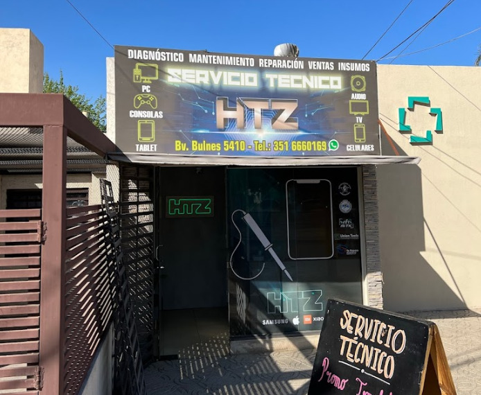

Tu tecnología, nuestra pasión.
Te damos la bienvenida a HTZ Servicio Técnico, tu solución integral para todas tus necesidades de reparación y mantenimiento. En un mundo cada vez más digitalizado, sabemos lo importante que es contar con dispositivos electrónicos en perfecto estado. Desde computadoras hasta electrodomésticos, estamos preparados para ofrecerte un servicio rápido, confiable y eficiente. Ya sea que necesites reparar una pantalla rota, optimizar el rendimiento de tu equipo o simplemente asistencia técnica. Con años de experiencia y un compromiso inquebrantable con la satisfacción del cliente, te garantizamos que tus dispositivos estarán en buenas manos. Descubrí cómo podemos ayudarte hoy mismo.
En esta página web vas a encontrar diferentes secciones, te invitamos a que las recorras y veas todo lo que tenemos para ofrecerte. En "Inicio" encontrás un vistazo general de nuestro local, en "Nosotros" podés conocernos y ver cómo encontrarnos, en "Productos" hay un catálogo de algunos artículos para tus dispositivos, en "Servicios" podés ver los distintos trabajos que ofrecemos y en "Preguntas" encontrás una lista de preguntas frecuentes para despejar algunas dudas.
